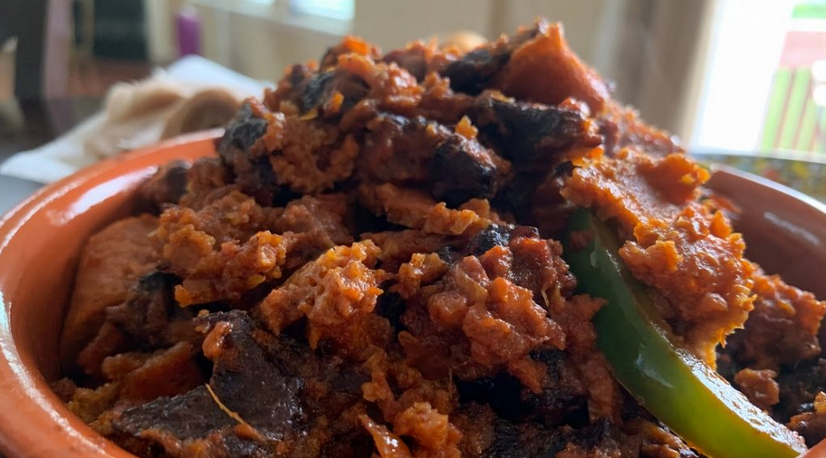

Quanta Firfir

Description
A traditional Ethiopian dish made with drief beef( quanta), and injera(a type of flatbread)
. A dish with rich and savory flavor, which is enhanced by the addition of berbere( powdered chilly).
Ingredients
- 200g dried beef(quanta), finely chopped
- 4 cums of turn injera bread
- 2 table spoons of niter kibbeh
- 1 medium onion
- 2 cloves of garlic, minced
- 2 tomatoes
- 1 tablespoon of berbere
- 1 teaspoon of salt
- 1 cup of water
Steps
- In a large skillet, heat the niter kibbeh over medium heat
- Add the copped onion and minced garlic
- Add the diced tomatoes, berbere sauce, paprika, and salt. Cook for another 2 minutes
- Add the chopped dried beef and cook for 10 minutes, stirring occationally
- Pour in the water and bring to a simmer. Cook for another 10 minutes to tenderize the dried beef.
- Add the torn injera bread to the skillet and mix well until the bread is coated with the sause.
- Cook for additional 5 minutes, stirring gently to avoid breaking the injera
- Serve the Ethiopian firfir hot, garnished with chopped spring onions and a side of yougurt